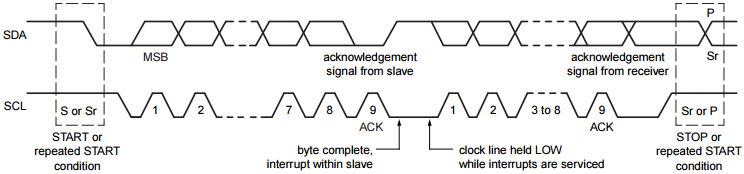

I2C Introduction¶
Overview¶
I2C（Inter-Integrated Circuit），唸做 I-square-C，它是 NXP（前身為飛利浦）開發的通訊協定，主要用來作為 IC 之間的通訊。它的速度一般是 100 Kbit/s，也有些是 400 Kbit/s，現在更有到 1 Mbit/s 與 3.4 Mbit/s 的，但仍然無法像 Ethernet 那麼快，所以不適合用來傳送大量資料，不過非常適合拿來設定 IC 初始值，或是 IC 之間的控制訊號傳輸。
由於 I2C 只用兩條線通訊 SDA（data）/ SCL（clock），因此空間超級省。
I2C 是 master/slave 架構，代表一個系統內通常 只能有一個 master，其他裝置只能當 slave（這邊說「通常」是因為 spec 裡面有寫它可以 multi-master )
I2C 是序列式的傳輸，只有兩條線，一條叫做 SDA， 專門用來送資料，另一條叫做 SCL，是用來傳 clock。依序是由 start condition 開始、傳資料，最後 stop condition 結束（所謂 start condition 就是這兩條線某種狀態的組合可以拿來認定為傳輸的開始）
時序圖¶
最左邊是 Start condition：SCL=high + SDA falling，最右邊是 Stop condition：SCL=high + SDA raising，至於中間的資料，它是以 8+1 bit 為一組來傳送的，意思是說 8 bit data 外加 1 bit 的 Acknowledge。ACK 是 slave 用來回應 master 用的，表示已經收到資料了，其中 clock 的 positive pulse 必須完整包含在 bit data 之內。
Idle 狀態下，CLK 和 DAT 皆為 high，而 資料的傳輸只有在 CLK 為 high 時可以進行，並且只能在 CLK 拉為 low 後才可以變更要傳輸的資料。如果在 CLK 為 high 時將 DAT signal 從 high 變成 low，則意味著傳遞出 START message，表示某個 master 裝置想佔據 bus 進行傳輸。如果在 CLK 為 high 時將 DAT signal 從 low 變成 high，